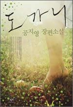
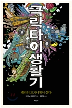
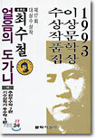
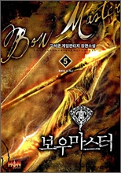
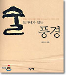

- [도서] 도가니 (최규석 도가니 일러스트 엽서 세트 증정)
공지영 저 | 창비 | 2009년 06월
10,000원 → 9,000원(10% 할인) | YES포인트 900원 (10% 지급)
도착 예상일 : 지금 주문하면 07월21일 (화) 받을 수 있습니다.
판매지수 299,529 | 회원리뷰 (45개) | 내용 편집/구성
YES24 단독! 창비 브랜드전 (09.07.06 ~ 09.07.31)
여행용 미니 크로스백, 휴대용 보냉병 등 여름선.. (09.07.02 ~ 09.08.31)
책 테마파크 YES24랜드 개장! 7월엔 테마로 뭉친.. (09.07.13 ~ 한정 수량)
'아름다운 책 人터뷰' 7월의 작가 공지영! (09.06.26 ~ 09.07.20)
최규석의 삽화 엽서책 증정! (09.07.01 ~ 09.07.31)
- [도서] 극락 타이 생활기 : 쾌락의 도가니에서 살다
다카노 히데유키 저/김병혁 역 | 시공사/시공사브랜드전(기획사) | 2008년 06월
11,000원 → 7,700원(30% 할인) | YES포인트 80원 (1% 지급)
도착 예상일 : 지금 주문하면 07월21일 (화) 받을 수 있습니다.
판매지수 1,602 | 회원리뷰 (26개) | 내용 편집/구성
시공사 여행에세이 총집합 특별 할인전 (09.07.13 ~ 09.08.31)
YES24 단독 시공사 브랜드전 (09.06.29 ~ 09.07.31)
- [도서] 얼음의 도가니 외 : 1993년도 제17회 이상문학상 수상작품집 이상문학상 수상작품집 17
최수철 등저 | 문학사상사 | 1993년 08월
7,800원 → 6,630원(15% 할인) | YES포인트 200원 (3% 지급)
도착 예상일 : 지금 주문하면 07월21일 (화) 받을 수 있습니다.
판매지수 210 | 회원리뷰 (1개) | 내용 편집/구성
- [도서] 보우마스터 5 : 혼란의 도가니
고석균 저 | 환상 | 2008년 10월
8,000원 → 7,200원(10% 할인) | YES포인트 360원 (5% 지급)
출고 예상일 : 3일 이내 (상품 주문 후 4~5일 이내 받을 수 있습니다.)
- [도서] 술도가니가 있는 풍경
최석우 | 오늘의책 | 2000년 06월
9,000원 → 7,200원(20% 할인) | YES포인트 220원 (3% 지급)
회원리뷰 (1개) | 내용 편집/구성